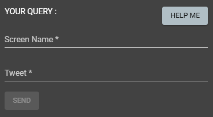

Strainer helps you to identify and detect social media platform manipulation by identifying credibility of the origin (user profile) and credibility of the content using sentiment analysis and machine learning, to determine the impact they made on social media and provide a forecast how it’s going to evolve.

Type the screen name of the user and the tweet which you want to check for creibility, an then click 'SEND'.
Then we will sen you a query Id, (keep it safe) use it to check the results as follows...